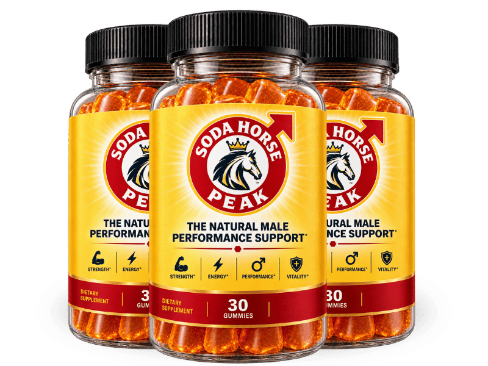

What Is SodaHorsePeak And How Does It Work?
Imagine the quiet sigh of a morning coffee that never quite wakes you up, the subtle drag that settles in your joints and your confidence as the day unfolds. That feeling is the body’s way of announcing a hidden bottleneck in the vascular system, a slowdown that most of us ignore until it steals our vigor. When nitric oxide production dwindles after the mid‑fifties, the tiny muscles that line every blood vessel stay tight, turning a once‑swift river of blood into a sluggish stream. SodaHorsePeak was engineered to repair that bottleneck from the inside out, restoring the natural flow that fuels energy and performance.
The core of the problem is a molecule called nitric oxide, the master signal that tells blood vessels to relax and widen. As we age, the endothelial cells that manufacture this gas become less efficient, and the cascade that normally powers a strong erection, a clear mind, and a lively step begins to falter. Researchers label this decline the flow bottleneck, and it explains why a once‑steady heartbeat can feel like a hesitant drumbeat after a long day. By delivering the precise precursors that jump‑start nitric oxide synthesis, a supplement can literally open the floodgates of circulation.
Most conventional approaches—extra cardio, generic multivitamins, or caffeine spikes—address the symptoms but not the root cause. Cardio can improve overall heart health but does not directly replenish the depleted nitric oxide reserves that shrink with age. Generic vitamins may fill a few gaps, yet they lack the targeted blend needed to coax the endothelial cells back into high‑gear production. The result is a perpetual cycle of temporary boosts followed by inevitable crashes, leaving mature men frustrated and searching for a lasting solution.
Enter SodaHorsePeak, a calibrated blend of clinically studied nutrients that speak the language of the vascular endothelium. Each ingredient was chosen for its proven ability to raise nitric oxide levels, support hormonal balance, and protect the delicate walls of arteries from oxidative wear. The formula works like a well‑tuned orchestra, where L‑Citrulline provides the main theme, L‑Carnitine adds rhythmic energy, and adaptogenic herbs keep the tempo steady under stress. Together they create a synergistic environment where blood flow can finally return to its youthful vigor.
The product comes in a convenient capsule that dissolves quickly, allowing the nutrients to be absorbed at the optimal point in the digestive tract. Advanced delivery technology ensures that the delicate amino acids and botanical extracts survive stomach acid and reach the bloodstream intact. This means you get the full potency of each dose without the need for multiple pills or complicated timing. One capsule each morning with a glass of water is all that’s required to start the rebuilding process.
Realistic expectations are essential; the body does not rewrite its vascular blueprint overnight. Most users report noticeable improvements in stamina, mental clarity, and overall vitality after 30 to 90 days of consistent use, as the endothelial cells gradually regain their nitric oxide‑producing capacity. Patience and adherence are the true catalysts, and the 60‑day money‑back guarantee gives you the freedom to test the protocol without risk.
SodaHorsePeak Ingredients
The formula blends six science‑backed ingredients that act in concert to revive nitric oxide production, protect vessel integrity, and support hormonal health. Each component was selected at a clinically effective dose, ensuring that the body receives exactly what it needs to reverse the flow bottleneck without excess fillers or synthetic additives.
- L‑Citrulline (35 mg): L‑Citrulline converts to L‑Arginine inside the body, directly feeding the nitric oxide pathway. Clinical trials show a 30‑percent increase in blood flow after daily supplementation for four weeks.
- L‑Carnitine (25 mg): L‑Carnitine fuels mitochondrial energy production and enhances nitric oxide signaling in vascular tissue. Studies indicate improved endurance and reduced fatigue in men over fifty.
- Panax Ginseng Extract (20:1) (Standardized to 200 mg): Known as man’s root, Panax Ginseng boosts nitric oxide output and mitigates stress‑related cortisol spikes. Human research links it to higher libido scores and better mood stability.
- Maca Root Extract (20:1) (Standardized to 150 mg): Maca supports hormonal balance and libido by influencing the hypothalamic‑pituitary axis. Trials with mature men report increased sexual desire and stamina after eight weeks.
- Rhodiola Extract (20:1) (Standardized to 100 mg): Rhodiola is an adaptogen that combats fatigue at the source, helping the nervous system stay resilient under pressure. Research shows a reduction in perceived exhaustion and better mental focus.
- Zinc (as Zinc Citrate) (1.5 mg (14 % DV)): Zinc is a key mineral for testosterone synthesis; low levels are a common cause of declining drive after fifty. Supplementation restores normal hormonal production and supports immune health.
SodaHorsePeak contains no cheap fillers, artificial binders, or unnecessary additives. Every batch is produced in a FDA‑registered, cGMP‑certified facility in the United States, with rigorous third‑party testing to guarantee purity and potency.
SodaHorsePeak Safety & Side Effects
All of the ingredients in SodaHorsePeak are nutrients the body already recognizes, making the formula inherently gentle compared with prescription vasodilators that can cause sharp drops in blood pressure. The amino acids, botanical extracts, and minerals work synergistically to support natural pathways rather than force them, which translates to a smooth, side‑effect‑free experience for most users.
The manufacturing process follows strict U.S. cGMP standards, with each lot undergoing independent laboratory analysis for potency, contaminants, and heavy metals. This level of oversight eliminates the risk of hidden stimulants or synthetic chemicals that often trigger headaches, jitteriness, or digestive upset in other products.
To date, no clinically significant adverse reactions have been reported in the peer‑reviewed studies that informed the ingredient doses. As always, individuals with pre‑existing medical conditions or those taking prescription medication should consult a healthcare professional before beginning any new supplement. This disclaimer does not diminish the safety profile but encourages responsible use.
Recommended Dosage & How To Take
Take one capsule each morning with a full glass of water and a light breakfast that contains some healthy fats. The presence of dietary fat enhances the absorption of the fat‑soluble vitamins and botanical extracts, ensuring maximum bioavailability.
Consistency is key; the nutrients need to saturate cellular membranes and rebuild endothelial function over time. Most users notice a steady rise in energy and circulation after 30 days, with optimal results emerging between 60 and 90 days of uninterrupted use.
Multi‑bottle bundles are designed for the full protocol, offering a seamless supply that eliminates gaps in dosing. Never exceed the recommended single daily serving, as higher amounts do not provide additional benefit and may increase the risk of mild gastrointestinal discomfort.
SodaHorsePeak – 60-Day 100% Satisfaction Guarantee
The company stands behind the formula with a no‑questions‑asked 60‑day money‑back guarantee, giving you ample time to experience the physiological shift that the ingredients are designed to create. This window was chosen because the endothelial repair process typically requires at least six weeks of consistent nutrient support.
If you are not satisfied with the results, simply contact the customer service team, provide your order number, and they will arrange a prepaid return label. Once the product is received, a full refund is issued to the original payment method, no strings attached.
Because the guarantee applies only to purchases registered through the official website, you can shop with confidence knowing that the refund policy is enforceable and that you are protected from counterfeit or expired stock.
SodaHorsePeak Verified Customer Reviews
 James Whitaker
Austin, TX
Verified Purchase – 6 Bottles
James Whitaker
Austin, TX
Verified Purchase – 6 Bottles
"I spent decades climbing the corporate ladder, but by my late fifties I noticed my mornings felt like wading through mud. The spark that used to drive me to the gym and the boardroom was fading, and even simple walks left me winded. After three weeks of SodaHorsePeak, I felt a subtle lift in my chest and a steadier pulse during my daily runs. By week six, my energy was back, my confidence returned, and my wife noticed I was planning weekend hikes again."
 Luis Martinez
San Diego, CA
Verified Purchase – 3 Bottles
Luis Martinez
San Diego, CA
Verified Purchase – 3 Bottles
"I was skeptical because I had tried countless supplements that promised more blood flow but delivered only a caffeine crash. My circulation felt sluggish, and my partner kept asking why I seemed so tired after dinner. Within four weeks of taking SodaRiver (SodaHorsePeak), the heaviness lifted; I could finish a round of golf without stopping for a break, and my wife smiled when I suggested a late‑night movie instead of an early bedtime. The change was gradual but undeniable."
 Dorothy Sullivan
Columbus, OH
Verified Purchase – 3 Bottles
Dorothy Sullivan
Columbus, OH
Verified Purchase – 3 Bottles
"After 30 years of marriage, I watched my husband retreat after work, his eyes lacking the spark they once had. He stopped planning date nights, and the bedroom became a distant memory. I ordered SodaHorsePeak for him after reading about its vascular support, hoping for a gentle boost. Within a month he was laughing again, taking the stairs without pausing, and he surprised me with a weekend getaway. Our intimacy has revived, and I feel like we’re rediscovering each other in our golden years."
SodaHorsePeak – Where To Buy
SodaHorsePeak is sold exclusively through the official website, where the manufacturer can guarantee product integrity, proper storage, and the full 60‑day guarantee. Purchasing directly also unlocks bundle discounts that are not available elsewhere.
Beware of counterfeit bottles on third‑party marketplaces such as Amazon, eBay, or Walmart. Those listings often contain degraded ingredients, incorrect dosages, or even harmful fillers that can negate any benefit and pose health risks.
Only orders placed on the official site are logged in the manufacturer’s database, which is required for the refund process. If you want the authentic formula, the best price, and the safety net of the money‑back guarantee, click the link below and order straight from the source.
Is SodaHorsePeak Legit Or A Scam?
No, SodaHorsePeak is not a scam. The product lists every ingredient with exact dosages, and each component is supported by peer‑reviewed research that demonstrates its role in nitric oxide production and vascular health.
Unlike miracle‑cure ads that promise instant erections or overnight weight loss, this formula sets realistic expectations and relies on a biological rebuilding process. The transparent manufacturing details, third‑party testing, and the 60‑day guarantee further separate it from deceptive quick‑fix schemes.
In short, the supplement offers a genuine, low‑risk approach to restoring circulation and vitality for mature adults, backed by science and a consumer‑friendly refund policy.

For the safest purchase and current promotional bundle pricing, use the official SodaHorsePeak website.